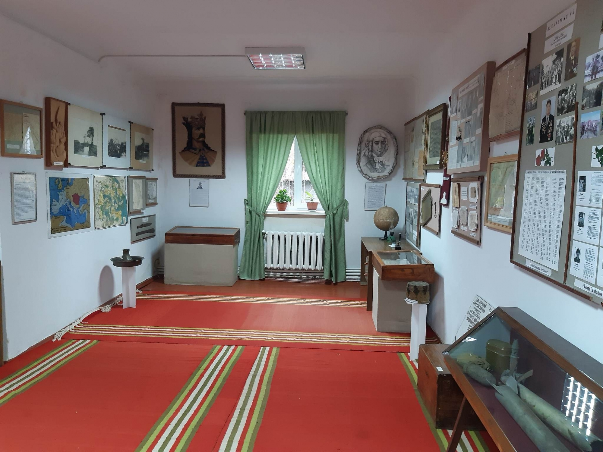

Explorează Criuleniul
Muzeul de Istorie și Etnografie
Muzeul își începe istoria de înființare la sfârșitul anilor 70 ai secolului trecut. Instituția a trecut prin câteva reorganizări și relocări, pe parcursul timpului. În anul 2001 s-a desfășurat ceremonia de deschiderea a muzeului, în actuala clădire. Muzeul are patru săli expoziționale, cu diversă tematică și cu variate exponate muzeale. Patrimoniul muzeal numără 11 289 piese cu valoare istorică, artistică și culturală: sculpturi, picturi, schițe, grafică, obiecte personale vechi, colecții de fotografii, ceramică, împletituri în fibre vegetale, inventar agricol, arme și armuri, instrumente muzicale, tehnică, mobilier etc.
Hramul "Minunea Sfântului Arhanghel Mihail"
Prima menţiune documentară privitoare la locaşul de cult datează din anul 1796. Hramul era „Sfântul Arhanghel Mihail”. Biserica era din lemn acoperită cu stuh, interiorul uns cu lut şi văruit, avea iconostas, icoane şi cărţile de cult necesare. În acea vreme cea mai mare parte a moşiei satului Criuleni era proprietatea Mitropoliei din Iaşi. În 1813 aceasta a trecut în posesia boierului Iordachi Chiriac Bartolomeu. Cealaltă parte era deţinută de familiile de răzeşi. Către anul 1814 în locul bisericii de lemn a fost construită o biserică din piatră, care a fost sfinţită la 6 septembrie 1814. Hramul bisericii a rămas acelaşi. Noul locaş de cult a fost construit din donaţiile locuitorilor satului Criuleni. Separat de biserică, deasupra porţii care ducea în curte a fost înălţată o clopotniţă din piatră. Şi biserica şi clopotniţa au fost acoperite cu şindrilă.
Copacul "Dragostei"
Ce scrii cu penița, nu tai cu bardița! Așa să fie, oare? Cine să fi fost primul ce și-a încrustat inițialele sau dovada de afectiune, istoria satului nu povestește! Dar dacă încerci să descifrezi ce e tăiat cu cuțitul, desenat cu corectorul sau notat cu pixul, lesne afli cine pe cine iubește în localitatea cu pricina. Aflat la răscruce de drumuri, pe marginea Nistrului specia de Platan este supus chinurilor lui cupidon de fiecare dată când îndrăgostiții ies la întâlnire, iar asta durează ani buni. Ecologiștii nu suțin rănirea copacului căci după atâtea încrustări acesta ar putea să se usuce. Dar coroana sub care bat atâtea inimi, rezistă.